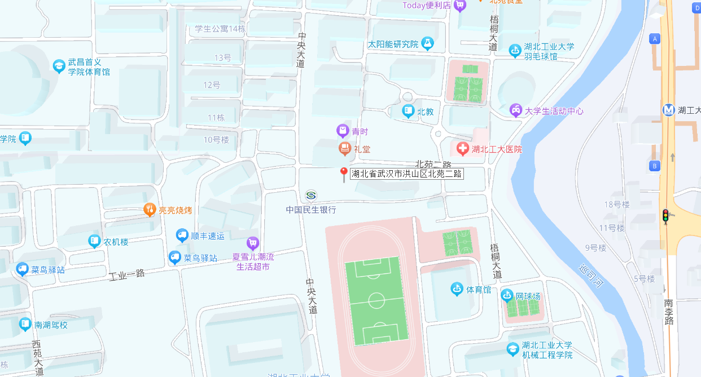

XunHang Website


湖北省迅航科技有限公司（外文名：Hubei Xunhang Technology Co., LTD，简称： XHT、XunHang）是一家以声源定位技术、无人系统开发和救援服务为主的企业，由湖北工业大学在校生余卓航 等人于2024年1月创立，位于湖北省武汉市，现任董事长为余卓航。
公司致力于为无人机工业、行业用户以及救援部门提供性能强、精度高的新型无人搜救产品和解决方案。 主要产品有守望者Watchman、守望者Watchman ProMax等。
| 中文名 | 湖北省迅航科技有限公司 | 公司类型 | 有限责任公司 |
| 外文名 | Hubei Xunhang Technology Co., LTD | 公司口号 | 做大做强，再创辉煌 |
| 国家 | 中国 | 经营范围 | 智能无人飞行器制造,其他电子器件制造 |
| 创始人 | 余卓航 | 员工数 | 10人 |
| 所属行业 | 制造业 | 注册资金 | 100万元 |
| 成立时间 | 202年1月 | 企业领导 | 余卓航（董事长）、吴静冉（监事）、林安琪（监事） |
| 总部地点 | 湖北省武汉市洪山区南李路28号湖北工业大学大学生创业园119室 | 年营业额 | 0万元（2023年） |
湖北省迅航科技有限公司成立于2024年，是一家专注于创新航空技术的高科技企业。公司致力于研发和制造先进的航空无人救 援系统，提供全方位的解决方案，涵盖无人机设计、导航系统、声源定位、数据处理与分析等领域。我们的愿景是通过技术创新， 推动航空科技的不断发展，增强社会安全保障，为救援领域提供高效、可靠的航空解决方案。
总部地址：湖北省武汉市洪山区南李路28号湖北工业大学大学生创业园119室
